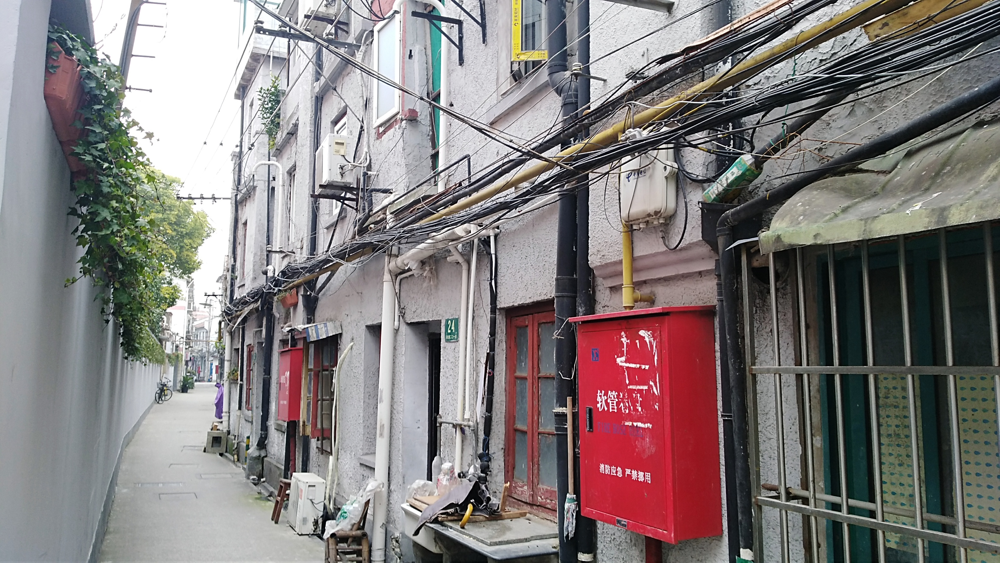

多伦路201弄24号
据文化大革命后搬进来的受访者说，这一排的房子已有100多年的历史。制造者的国籍未知，门口门槛很高， 屋内台阶一级级也造得非常之高，远远超出现在上海建筑的台阶高度。

（多伦路201弄24号外部）
多伦路201弄99号
开门后先是一个空旷的公共厨房，后面连着约15间房间，再后面又连着一块公共厨房。据采访者称，这里可能原为日本人建的虹口道场，后改建为仓库，用来存放电子材料。在解放后变成职工宿舍，现为一般住所。

（多伦路201弄99号外部）

（多伦路201弄99号入口）

（多伦路201弄99号厨房）